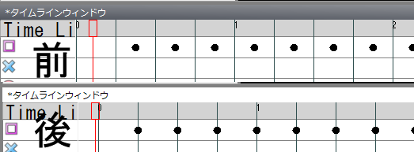
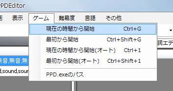

标记在时间轴窗口中放置。

在均匀排列的黑色竖线上双击，即可放置标记。
垂直位置决定标记的种类。暂且在方块的水平位置上，沿着竖线双击放置。

变成上图那样后，试着播放视频。
应该能听到铃鼓的声音，但节奏可能对不上（如果听不出是否对不上，可以再多放置一些标记）。因此要让节奏和竖线的位置对齐。
将鼠标移到时间轴窗口左上角写着“TimeLine”的部分（可能显示不全）。
在那里左右拖动，所有标记都会平移。
适当平移并反复播放，让标记的位置与节奏吻合。
吻合之后，再调整竖线使其穿过标记。
在BPM输入框右侧的BPMOffset文本框中输入适当的值，使竖线穿过标记。
BPMOffset的取值最小为0，最大为BPM的数值。

根据环境不同，PPDEditor和PPD中击打音的时间听起来可能不一样。
因此，可以从PPDEditor轻松地在PPD上进行测试。
从游戏菜单中选择适当的项目，就会打开PPD的窗口，可以在PPD中游玩。
请调整到在PPD中听起来正确为止。

这样放置标记就变得简单了。
接下来，一边播放视频，一边配合人声的节奏放置标记即可。
标记的种类最好先固定为一种（之后可以轻松更改）。
删除标记时，选中标记（变成蓝色即为选中状态）后按Delete键。
也可以通过范围选择一次删除多个标记。
下一步